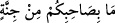
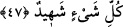

“
” da vakfın tam olması da mümkündür. Bu durumda mânâ ‘sonra Hz. Peygamber
(a.s.)’ın durumunu ve O’nun getirdiklerini düşünün ki onun hakikatini bilesiniz, demek
olur. Bu durumda
“
” sözü, Allah Teâlâ tarafından tefekkür ve düşünme yoluna dikkat
çekmek için sevk edilmiş bir başlangıç cümlesidir. Yâni dünya ve âhiret mülk ve
saltanatının aşağısında olduğu böyle büyük bir işe ancak kendisinden delil istendiğinde
ve acziyeti ortaya çıktığında rüsvay olmaya aldırmayan bir mecnûn/deli kalkışabilir. Ya
da bu işe Allah tarafından te’yid edilen, peygamberlik için seçilip hazırlanmış, huccet
ve delîline güvenen birisi kalkışabilir. Siz Peygamber (s.a.)’in akıl bakımından
âlemlerin en üstünü, en doğru sözlüsü, şahsiyet olarak en nezihi, ilim bakımından en
üstünü, ameli en güzel olanı ve beşerî kemâlâtı en çok kendisinde toplayanı olduğunu
bildiğinize göre artık onu dâvâsında tasdik etmeniz lâzımdır. Kulağı olmayan dağların
bile karşısında yere yıkıldığı mûcizeler buna eklenince nasıl etmezsiniz!
“O” sizin arkadaşınız “ancak şiddetli bir azap gelip çatmadan evvel” yâni ona karşı
gelecek olursanız âhiret azâbından önce “sizi uyaran” hakkı söyleyen bir dil ile sizi
korkutan “bir peygamberdir.” Çünkü o kıyâmetin öncesinde ve yakınında
gönderilmiştir.
et-Te’vîlâtü’n-Necmiyye’de der ki: “O hem dünyada hem de âhirette şiddetli azaptan
sizi kurtarmak için uyarıcıdır. Bu şiddetli azap dünyada cehâlet, tanımama, bilmeme,
inkâr, Allah Teâlâ tarafından kovulma ve lânetlenmedir. Âhirette ise hasret, pişmanlık
ve hesap sorulurken utançtır. Bazı haberde bildirildiğine göre bu azab Hak Teâlâ’nın
kendilerine suâl sorduğu kimselerin meydana gelen utançtan dolayı: ‘Ey Rabbimiz bizi
istediğin her türlü azabla cezâlandır da bu suâl azâbıyla cezâlandırma.’ demeleridir.
47. De ki: “Ben sizden bir ücret istemişsem, o sizin olsun. Ücretim yalnız Allah’a
aittir. O, her şeye şahittir.”
“De ki: “Ben sizden” risâleti tebliğ karşılığında “bir ücret istemişsem, o sizin
olsun.” Maksad ücret istemeyi tamamen reddetmektir. Yâni kendisine hiçbir şey
vermeyen birine bir kimsenin: ‘Eğer bana bir şey verdiysen onu al, senin olsun.’ demesi
gibi ‘Hiçbir ücret istemiyorum.’ demektir.
Bâzıları der ki: “De ki: “Ben buna karşılık sizden akrabalık sevgisinden başka bir
ücret istemiyorum.” (eş-Şûrâ, 42/23) âyeti nazil olunca Peygamberimiz (s.a.) Mekke
müşriklerine: “Akrabam konusunda bana eziyet etmeyin.” buyurdu. Onlar da bundan
geri durdular. Hz. Peygamber (s.a.) onların ilâhlarını yerince müşrikler “Muhammed